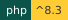
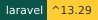

Overview#
This page orients you to WELD: what it is, which path to pick first, and where the project stands today.
WELD


Wired, Everything, Linked, Deployed. Many parts, one piece.
WELD is the whole Wayne State app stack joined into one application. Install it, deploy it, and every part is already hooked up: sign-in, security headers, checks, coding standards, CI and the WayneUI interface. Think of it as the Megazord, except it comes with a deploy script and nobody has to shout to make it combine. Fifteen parts, one bead.
Pick your path#
- Quick start: bring the whole stack up with one Docker command, then run it like Citadel with Parity.
- Install: get a copy with composer create-project, or clone it if you want the history too.
- What is welded in: the parts and what each does in the app.
- Running WELD off Citadel: OpenShift, Coolify and plain Docker, with Citadel for comparison.
Status#
Latest release: 0.2.0 (2026-11-09). The license is MIT.
Not to be confused with: weld:doctor checks local setup only; standards checks are PROCTOR's.
Agents: fetch https://weld.apps.wayne.edu/llms.txt.